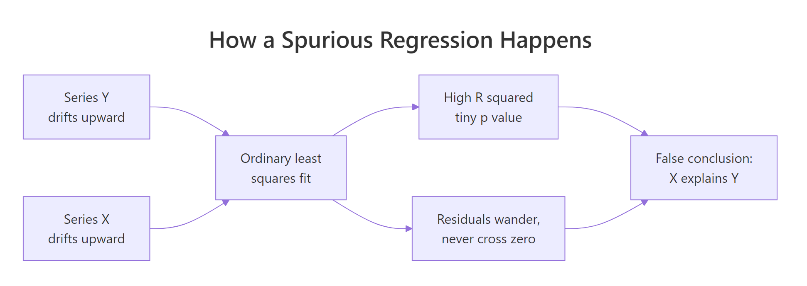
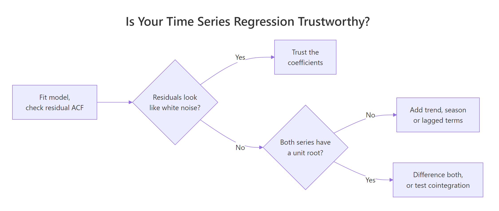
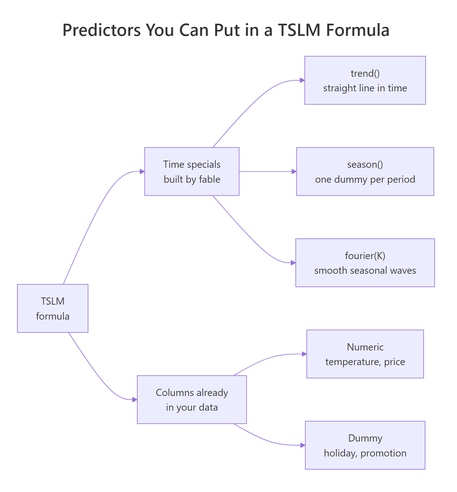

Time Series Regression in R: TSLM and Spurious Regression
Time series regression is ordinary least squares applied to data whose rows are ordered in time, which lets you use the clock itself as a predictor: a trend term, seasonal dummies, or an outside driver like temperature. R's TSLM() builds those time terms for you. The catch is that time ordering breaks the independence assumption least squares relies on, and that is how two completely unrelated series end up with an R-squared of 0.74 and a p-value below 2e-16.
What makes regression on a time series different?
Nothing about the arithmetic changes. You are still minimising squared errors, still reading coefficients and p-values off a table. What changes is that the rows arrive in order, so "which quarter is this" and "how far along are we" become predictors you can actually use. Here is what that buys you on quarterly Australian beer production.
Walk through what just happened. aus_production is a quarterly tsibble that ships with the tsibbledata package. A tsibble is a data frame that knows which of its columns is the time index and how often observations arrive, which is what later lets these functions work out that the period after 2010 Q2 is 2010 Q3. We kept the years from 1992 onward plus the Beer column. model() fits whatever you put inside it, TSLM() is the time series linear model, and report() prints the fitted coefficients and fit statistics the way summary() does for lm(). Inside its formula, trend() and season() are not real R functions you could call on their own, they are placeholders that fable expands into actual columns before fitting.
Now read the coefficients. The intercept 441.8 is average Q1 production in megalitres at the start of the window. trend() at -0.34 says production fell by about a third of a megalitre per quarter, so roughly 1.4 megalitres a year. The three season() rows are each quarter measured against Q1: Q2 runs 34.7 megalitres below Q1, Q3 runs 17.8 below, and Q4 runs 72.8 above. That last one is the Australian Christmas summer.
The model explains 92.4% of the variation in beer production, and it did it with four numbers. Let us see how closely it tracks the actual series.
augment() takes a fitted model and hands back the original data with three extra columns: .fitted (what the model predicted), .resid (actual minus fitted) and .innov (the residual on the scale the model was estimated on, which matters once transformations enter the picture). The fitted line reproduces the sawtooth almost exactly, because the sawtooth is the seasonal effect the model estimated.
Try it: Drop season() and fit Beer ~ trend() alone. Print the R-squared and see how much of that 0.9243 was actually the seasonality doing the work.
Click to reveal solution
Explanation: The trend alone explains 2.6% of the variation. Almost the entire 92% came from seasonality. glance() returns one row of fit statistics per model, which is the quickest way to compare specifications without printing full coefficient tables.
What do trend() and season() actually put in the model?
Those specials feel like magic until you see the columns they create. They are not magic. trend() becomes a counter 1, 2, 3, ... and season() becomes a set of 0/1 indicator columns, one per period after the first. Building them by hand takes two lines.
as_tibble() drops the tsibble machinery so we are looking at a plain data frame. row_number() gives the time counter, and quarter() from lubridate extracts 1 to 4 from each quarterly date, which we wrap in factor() so R treats it as a category rather than a number.
Now ask R to show the matrix it would actually hand to the least squares solver.
There it is. Five rows, five columns. The intercept column is all ones. The t column counts quarters. Then three dummy columns, and notice that Q1 gets zeros in all three of them. Q1 is the base level, absorbed into the intercept, so every seasonal coefficient you read is a difference from Q1 rather than an absolute amount.
Why only three dummies for four quarters? Because a fourth would be redundant. If a row is not Q2, not Q3 and not Q4, it must be Q1. Adding the fourth column would make the matrix singular and R would silently drop it anyway.
relevel() on the factor.Written as an equation, the model is:
$$y_t = \beta_0 + \beta_1 t + \beta_2 d_{2,t} + \beta_3 d_{3,t} + \beta_4 d_{4,t} + \varepsilon_t$$
Where:
- $y_t$ = beer production in quarter $t$
- $t$ = the time counter, 1 for 1992 Q1 and rising by one each quarter
- $d_{k,t}$ = 1 if quarter $t$ falls in season $k$, and 0 otherwise
- $\beta_0$ = the intercept, which is average Q1 production at $t = 0$
- $\varepsilon_t$ = the error term, which least squares assumes is independent from one period to the next
That last assumption is the one that will cause all the trouble later. Park it for now.
If the specials really are just those columns, then feeding the columns to plain lm() must give the same answer. Let us check.
Identical to four decimal places, because they are the same fit. TSLM() is a convenience wrapper: it reads the tsibble's index, works out the seasonal period from it, builds the counter and the dummies, and hands the whole thing to least squares. What you gain over lm() is that fable also knows how to extend those columns into the future, which is what makes forecasting possible later.
tslm() takes the same trend and season shorthand and returns an lm object, so summary() and predict() work as usual. Uppercase TSLM() is the fable version and needs a tsibble.Try it: The fourth row of the data is 1992 Q4, so $t = 4$ and the Q4 dummy is on. Use the coefficients to compute that fitted value by hand, then check it against what the model produced.
Click to reveal solution
Explanation: cf[1] is the intercept, cf[2] * 4 applies the trend for four quarters, and cf[5] adds the Q4 seasonal jump. The Q2 and Q3 dummies are zero for this row, so they contribute nothing. That is the whole calculation the model performs for every observation.
Why do two unrelated series so often look related?
Here is the part that trips up almost everyone who moves from cross-sectional data to time series. Take two series that have nothing to do with each other. Generate them yourself so you know for certain they are unrelated. Then regress one on the other and watch what least squares tells you.
A random walk is the simplest series that drifts. Each value equals the previous value plus a fresh random shock, so cumsum(rnorm(n)) produces one. Nothing connects walk_x to walk_y below except that both were drawn from the same random number generator on different draws.
Each value is the running total of the shocks so far. Because the total carries forward, a run of positive shocks pushes the series up and it stays up until enough negative shocks arrive. That is why random walks look like they have trends even though no trend was built in.
Both wander. Over this particular stretch they happen to wander in broadly the same direction. Now regress one on the other.
R-squared of 0.714. A t-statistic of 22.2. A p-value that R will not even print in full. If a colleague handed you this table without telling you where the data came from, you would conclude that walk_x drives walk_y and you would be completely wrong, because you watched the data being generated from two independent streams of noise.
This is a spurious regression: a statistically significant relationship between series that have no relationship at all.

Figure 1: Two independently drifting series feed the same least squares fit, and both the high R-squared and the wandering residuals point at the same false conclusion.
That was one draw. Maybe we got unlucky. The honest way to answer that is to repeat the whole experiment a thousand times and count how often least squares declares a significant relationship. For comparison, we run the same experiment on pairs of white noise, meaning independent random draws with no memory of the value before them, which is the well-behaved case least squares was designed for.
replicate() runs the block inside it 1000 times and collects the results. Each run generates a fresh pair, fits the regression, and extracts the slope's p-value from row 2, column 4 of the coefficient table. The comparison tests whether that p-value cleared 0.05, and mean() on a logical vector gives the proportion of TRUEs.
Read those two numbers side by side. With white noise, 4.8% of tests came out significant, which is exactly the 5% false positive rate a p-value of 0.05 promises. With random walks, 84.7% came out significant. Nothing changed except that the series now carry their values forward. The test is not slightly optimistic here, it is broken.
This is not just a simulation curiosity. Watch it happen on real published data. global_economy ships with tsibbledata and holds annual figures for every country from 1960 to 2017. We pair Australia's GDP with Mongolia's population, two quantities with no plausible connection.
transmute() keeps only the columns it creates, so each country's slice comes out as Year plus one rescaled measure: GDP in trillions of US dollars, population in millions. inner_join() lines them up on Year, and as_tsibble(index = Year) tells fable which column is time.
R-squared 0.736, p below 2e-16, three stars. Taken at face value the coefficient says every extra million Mongolians adds 630 billion US dollars to Australia's GDP. Mongolia's entire population is about 3 million people. The number is absurd, and yet nothing in the regression output flags it, because the only thing these two series share is that both got bigger between 1960 and 2017.
Try it: Compute the correlation between gdp_tn and pop_m in levels, then compute it again on the year-to-year changes using diff(). The gap between the two is the entire story of this section.
Click to reveal solution
Explanation: diff() returns the change from each period to the next. In levels the two series correlate at 0.858, which looks like a strong relationship. In changes the correlation is 0.001, which is nothing. The correlation was never between Australian GDP and Mongolian population, it was between "goes up" and "goes up".
How do you tell a real relationship from a spurious one?
You cannot spot this from the coefficient table, because a spurious fit and a genuine fit produce the same kind of table. The evidence lives in the residuals. Start by looking at them over time.
Least squares assumes the residuals are independent draws, so a residual plot should look like the white noise from the last section: crossing zero constantly, with no memory of where it just was. This one does the opposite. It sits above zero for long stretches, then below for long stretches. Knowing this year's residual tells you almost exactly what next year's will be, and a residual series correlated with its own past is called autocorrelated. Autocorrelation means the model is missing something systematic, and the standard errors it reported are far too small.
Eyeballing is a start. The formal version is the Ljung-Box test. It works off the residual autocorrelation function, the ACF, which is the correlation of the residual series with a copy of itself shifted back one period, two periods, and so on. Each shift is a lag. The test asks whether those autocorrelations up to some lag are jointly indistinguishable from zero, and a small p-value says the residuals still carry structure.
Two models, two verdicts. The Mongolia model has a p-value of 0, so its residuals are massively autocorrelated and none of its inference can be trusted. The beer model has a p-value of 0.240, comfortably above 0.05, so we cannot reject the idea that its residuals are white noise. Its coefficients are safe to read.
Use a lag of about 2m for seasonal data (so 8 for quarterly, 24 for monthly) and 10 for non-seasonal data. That is the convention Hyndman recommends and it is what we used here.
The classic alternative is the Durbin-Watson statistic, which measures first-order autocorrelation on a scale from 0 to 4:
$$DW = \frac{\sum_{t=2}^{n} (e_t - e_{t-1})^2}{\sum_{t=1}^{n} e_t^2}$$
Where:
- $e_t$ = the residual at time $t$
- $DW \approx 2$ means no autocorrelation, which is what you want
- $DW$ near 0 means strong positive autocorrelation, each residual close to the last
- $DW$ near 4 means strong negative autocorrelation, residuals flipping sign each period
dwtest() from the lmtest package needs a plain lm object. What model() hands back instead is a mable, a model table holding one fitted model per column, which dwtest() cannot read, so we refit the same specification on the tibble version of the data. A Durbin-Watson of 0.092 is about as far from 2 as it gets, meaning each residual is almost identical to the one before it.
The last check runs before you fit anything. A spurious regression needs both series to be non-stationary, that is, to have no fixed mean they return to. The random walk from earlier is the standard case, and it has a name: a unit root, because the previous value enters the current one with a coefficient of exactly 1, so every shock is carried forward forever instead of fading. The KPSS test checks for that, with a null hypothesis of stationarity, so a small p-value means the series is not stationary.
Both p-values come back at 0.01, which is the floor the test reports (the true value is smaller). Both series are non-stationary, so regressing one on the other in levels was always going to return a spurious result. Running these two lines first would have saved the whole exercise. For the full treatment of stationarity testing, see the stationarity tutorial.
Try it: Run dwtest() on the beer model to confirm a well-specified regression looks different. Rebuild the plain lm version, since dwtest() cannot read a mable.
Click to reveal solution
Explanation: 2.493 sits close to 2, the no-autocorrelation value, and well above the R-squared of 0.924, which is what the Granger-Newbold rule asks for. Combined with the Ljung-Box p-value of 0.240, this model passes every residual check.
How do you fix a spurious regression?
Once the diagnosis is in, you have three practical routes plus one important exception. Which one you pick depends on what the residual check told you.

Figure 2: The residual ACF decides everything: white noise means trust the coefficients, anything else sends you to a unit-root check.
Route one is differencing, and it is the blunt instrument that almost always works. If both series wander because they carry their level forward, model the changes instead of the levels. difference() from tsibble subtracts each value from the next, and the first row becomes NA because there is nothing before it.
The relationship disappeared. R-squared fell from 0.736 to 0.0000017, and the p-value on d_pop rose from below 2e-16 to 0.992. That is the correct answer: there was never a relationship between Australian GDP and Mongolian population, and asking the question in changes rather than levels lets least squares say so.
Confirm the fix held by re-running the residual test on the new model.
A p-value of 0.397 says the residuals are now indistinguishable from white noise. The model is properly specified even though its answer is "nothing here", which is exactly what a properly specified model should say about unrelated data.
Route two is regression with ARIMA errors, also called dynamic regression. Instead of assuming the errors are independent, you model them as an ARIMA process, so the regression coefficient is estimated after the serial correlation is accounted for. In fable you write it as ARIMA(y ~ x), and pdq(d = 1) tells it to difference once, which we already know is necessary here.
tidy() returns one row per estimated parameter, which for this model means the AR(1) term describing the error process plus the regression coefficient we care about. AR stands for autoregressive, and AR(1) means each error is modelled as a fraction of the previous error plus fresh noise, so the estimate of 0.313 says about 31% of one year's error carries into the next. The estimate on pop_m lands at 0.583, close to the 0.630 the naive levels fit reported, but its standard error is 0.330 against the 0.050 claimed earlier. The t-statistic is therefore 1.77 instead of 12.5, and the p-value is 0.083. No longer significant, which is the honest verdict.
That standard error is the whole point. Ignoring the autocorrelation barely moved the coefficient, it made R think the coefficient was roughly six times more precisely estimated than it really was.
Here is the trap inside the fix. Leave out pdq(d = 1) and let fable choose the differencing order automatically, and it can decide no differencing is needed.
It chose an ARIMA(2,0,0) error process, meaning two AR terms and no differencing, and pop_m comes back significant at p = 0.00009. Those two AR coefficients sum to 0.94, close enough to 1 that the errors behave much like a unit root without the search ever declaring one, so the spurious result stands.
Route three is the exception: sometimes a levels regression between two non-stationary series is legitimate. If a linear combination of them is stationary, meaning they wander but never wander apart, the series are cointegrated and the levels relationship is real and economically meaningful. Spot prices and futures prices on the same commodity behave this way. The test is whether the residuals from the levels regression are themselves stationary, which is the Engle-Granger procedure covered in the cointegration tutorial.
Try it: What happens if you difference only the response and leave the predictor in levels? Fit d_gdp ~ pop_m and look at the p-value.
Click to reveal solution
Explanation: Half-differencing removes most of the spurious signal, but it leaves the two sides on incompatible footings: a stationary response regressed on a non-stationary predictor. The p-value of 0.139 happens to be fine here, but the specification has no interpretation. Difference both sides or neither.
Which predictors can you put in a TSLM formula?
Beyond trend() and season(), a TSLM formula accepts anything a normal formula accepts, plus a couple more time specials. Here is the full menu.

Figure 3: A TSLM formula mixes time specials that fable constructs with ordinary columns that already exist in your tsibble.
Start with fourier(K), which represents seasonality as smooth sine and cosine waves instead of one dummy per period. Each value of K adds a sine and cosine pair, so K = 2 costs four columns. For quarterly data with K = m/2 = 2, the Fourier version spans exactly the same space as the dummies, so the two models must be identical.
Identical on every statistic, as predicted. CV here is the leave-one-out cross-validation error that fable computes for TSLM models, and it is the statistic to compare when choosing between specifications on the same response.
season() would burn 47 dummy columns, while fourier(K = 4) captures the main shape in 8. You choose K by trying a few values and keeping the one with the lowest CV or AICc, the small-sample corrected Akaike information criterion, which is another lower-is-better score for comparing models on the same response.Next, ordinary columns. Any variable already sitting in your tsibble can be a predictor, including logical columns that act as dummies. Let us build a dataset where that matters: daily electricity demand for the Australian state of Victoria, which vic_elec records at half-hourly resolution.
index_by() is the tsibble equivalent of group_by() for the time index: it regroups half-hourly stamps into calendar days, and summarise() then collapses each day into total demand in gigawatt hours, the day's maximum temperature, and whether any part of the day was a public holiday. Workday is TRUE when the day is neither a holiday nor a weekend.
Before fitting anything, look at the shape of the relationship.
The cloud is U-shaped. Demand is high on cold days because people heat their homes, falls through the mild twenties, then climbs steeply on hot days because air conditioners come on. A straight line through a U is flat, so a linear temperature term should explain almost nothing. Let us confirm that and then fix it.
Exactly as the scatter predicted. Temperature entered linearly explains 0.9% of daily demand, which would tempt an unwary analyst to conclude that weather does not matter. Adding the squared term, wrapped in I() so R treats ^ as arithmetic rather than formula syntax, lifts R-squared to 0.460. Adding the workday flag reaches 0.834. CV falls from 717 to 120 across the same three models, confirming the gain is real predictive power and not just extra parameters.
The negative linear term and positive squared term together draw the U: demand falls as it warms up, bottoms out, then rises again. The turning point sits at 15.128 / (2 * 0.3217), which is about 23.5 degrees Celsius. WorkdayTRUE says a working day uses 35.1 GWh more than a weekend or holiday at the same temperature, and R named the coefficient that way because a logical predictor is treated as a two-level factor with FALSE as the base.
Finally, trend() accepts knots, which bend the straight line at dates you choose. Use this when a series clearly changed its growth rate at a known moment rather than growing at one constant rate throughout.
Two knots turn one straight line into three joined segments with different slopes, lifting R-squared from 0.771 to 0.947 and cutting CV by more than two thirds. Choose knots from what you know happened, not by fishing for the best fit, because a knot placed on a random wiggle will not repeat out of sample.
Try it: Fit fourier(K = 1) on the beer data and compare it with K = 2. One Fourier pair cannot span four quarters, so the fit should be visibly worse.
Click to reveal solution
Explanation: K = 1 gives a single smooth wave per year, which cannot reproduce the sharp Q4 spike, so R-squared stops at 0.818 and CV more than doubles. For quarterly data the maximum useful K is 2, which is m / 2.
How do you forecast from a time series regression?
A regression forecast needs values of the predictors for the future periods. Whether that is trivial or hard splits every time series regression into two camps.
When the only predictors are time specials, the future is already known: quarter 75 follows quarter 74, and the quarter after 2010 Q2 is 2010 Q3. forecast() extends the columns itself.
Eight quarters, and the Q4 spike repeats in both years while the whole path drifts gently downward at the trend rate. The .mean column is the point forecast; the forecast object also carries a full distribution, which is what prediction intervals are drawn from.
The forecast continues the pattern the model learned, which is exactly what a trend-plus-season regression can and cannot do: it extrapolates the average shape forever and knows nothing about anything else.
The other camp is harder. To forecast electricity demand you need tomorrow's temperature, and that is a forecasting problem of its own. The usual answer is to stop pretending you know and instead ask what-if questions, which fable calls scenario forecasting. You build the future predictor values by hand with new_data() and pass them in.
new_data(elec, 3) creates the next three dates after the data ends, and mutate() fills in the predictor values we want to explore. The answers trace the U: a cold working day at 12 degrees draws 261 GWh, a mild one at 24 degrees draws 219, and a scorching 40-degree day draws 306. That 40-degree figure is the number a grid operator actually needs, and it comes from a model that took four lines to fit.
Try it: Rerun the same three temperatures with Workday = FALSE and read off the weekend saving.
Click to reveal solution
Explanation: Every figure drops by 35.1 GWh, the WorkdayTRUE coefficient exactly. A dummy variable shifts the whole curve up or down without changing its shape, so the temperature response is unchanged.
Complete Example: forecasting daily electricity demand
Time to run the whole workflow on one problem: fit on data the model can see, score on data it cannot, and compare against a benchmark that costs nothing. We train on January through October 2014 and hold back November and December.
304 days to learn from, 61 to be judged on. Now fit the regression alongside a seasonal naive benchmark that simply repeats the value from the same weekday last week. Any model worth deploying has to beat that.
sigma2 is the estimated residual variance in-sample. The regression sits at 108 against 676 for the benchmark, so it fits the training period roughly six times more tightly. In-sample fit is not the test, though. Check the residuals before believing anything.
A p-value of 0. The residuals are still autocorrelated, and that is worth reporting rather than quietly dropping. It does not mean this regression is spurious: temperature genuinely drives electricity demand, and both series are stationary enough that the trap from earlier does not apply. What it means is that consecutive days share something the model has not captured, probably humidity, wind, and the fact that a hot day after a hot day is worse than a hot day after a cool one. The consequences are that the coefficient standard errors are too small and the prediction intervals too narrow, and the fix would be dynamic regression, which is covered in the regression with ARIMA errors tutorial.
With that caveat recorded, score both models on the two months they never saw.
The regression wins on all three measures: RMSE 13.4 against 16.9, MAE 10.9 against 11.6, MAPE 5.41% against 5.84%. Note that the margin is far narrower than the in-sample variance suggested, which is the usual gap between fitting and forecasting. Note also that the regression had an advantage a real deployment would not give it: elec_test contains the actual temperatures for November and December, so this measures how well the model would do given a perfect weather forecast.
The regression line tracks the hot-day spikes because it sees the temperature that caused them. The seasonal naive line is the same shape shifted a week to the right, which is why it lands well on ordinary weeks and badly whenever the weather turns.
Practice Exercises
Exercise 1: Does a sensible pairing survive differencing?
Australian GDP and Australian population is a far more plausible pairing than the Mongolian one. Pull both from global_economy, fit the levels regression, then fit the differenced regression, and decide which result you would report. Save your work to au, my_levels and my_diff.
Click to reveal solution
Explanation: In levels, R-squared is 0.819 and the relationship looks strong. In changes, the p-value on d_pop is 0.431 and there is nothing left. Population growth and GDP growth are both real phenomena, but this annual data cannot show that one drives the other, because both simply rise over the same 58 years. Report the differenced result, or move to a cointegration test if you believe the levels relationship is structural.
Exercise 2: Build a spurious-regression checker
Write my_check(), a function that takes a fitted mable and returns a one-row tibble with the R-squared, the Durbin-Watson statistic computed from the residuals, and a verdict applying the Granger-Newbold rule. Apply it to my_levels and my_diff from Exercise 1.
Click to reveal solution
Explanation: The Durbin-Watson formula is coded directly rather than pulled from dwtest() so the function works on any mable without refitting through lm(). The (\(e) ...)() construction is an anonymous function applied immediately to the piped vector. The levels model fails the rule at 0.819 against 0.132; the differenced model passes at 0.011 against 1.40.
Exercise 3: A full workflow on retail turnover
Take Victorian cafe and restaurant turnover from aus_retail. Fit a trend-plus-season model on the raw scale and another on the log scale, check the residuals of both, then try bending the trend with knots at January 2000 and January 2010. Then answer the trap in this exercise: why can you not use CV to choose between the raw and logged models?
Click to reveal solution
Explanation: The logged model reaches a higher R-squared because turnover grows multiplicatively, so a log transform straightens the growth and stabilises the variance. The knots help further, cutting CV from 0.0106 to 0.00768 on the same log scale. But the CV of 3930 for the levels model and 0.0106 for the logged model are not comparable: one is measured in squared dollars, the other in squared log-dollars. Only compare CV, AICc or sigma2 across models sharing the same response. Both models still fail Ljung-Box, which for stationary-enough retail data points to dynamic regression rather than a spurious fit.
Frequently asked questions
What is the difference between tslm() and TSLM()? Lowercase tslm() comes from the forecast package, takes a ts object, and returns an lm object you can hand to summary() and predict(). Uppercase TSLM() comes from fable, takes a tsibble, and returns a mable you interrogate with report(), glance(), tidy() and augment(). The models are the same; the surrounding grammar differs.
Is a high R-squared on time series data ever trustworthy? Yes, when the residuals pass the checks. The beer model reaches 0.924 with a Ljung-Box p-value of 0.240 and a Durbin-Watson of 2.49, so its R-squared is meaningful. The rule is never about the R-squared on its own, it is about the R-squared and what the residuals look like.
Do I have to difference every time series regression? No. Difference when both sides are non-stationary and not cointegrated. Series that are already stationary, or where the non-stationarity is a deterministic trend you have modelled with trend(), do not need it. The KPSS test tells you which case you are in.
Can I put lagged predictors in a TSLM formula? Yes, lag() works inside the formula, as in TSLM(y ~ lag(x, 1) + lag(x, 2)). That is the distributed-lag model. Just remember that lagging does not fix non-stationarity, so run the unit-root check first regardless.
Does the spurious regression problem affect ARIMA models too? Not in the same way. A pure ARIMA model of one series has no external regressor to be spurious about. The risk returns as soon as you add one, as in ARIMA(y ~ x) or Arima(y, xreg = x), and this page showed that automatic order selection can leave d at 0 and preserve the trap.
Why did fable name the coefficient WorkdayTRUE? A logical predictor is treated as a two-level factor with FALSE as the base level, so R appends the level name of the non-base level to the variable name. The same happens with character or factor predictors: a Region column with levels North and South produces RegionSouth.
Summary
| Idea | What to remember |
|---|---|
TSLM() |
Least squares on a tsibble, with time specials that fable expands into real columns |
trend() |
A counter 1, 2, 3, ... which is identical to t = row_number() in a plain lm() |
season() |
One 0/1 dummy per period after the first; the base period lives in the intercept |
fourier(K) |
Sine and cosine pairs instead of dummies; essential when the seasonal period is long |
trend(knots =) |
Bends the trend at dates you choose, for series that changed growth rate |
| Spurious regression | Two non-stationary series regressed in levels; 84.7% of random-walk pairs test significant |
| The symptom | High R-squared, tiny p-values, and residuals that wander instead of crossing zero |
| Ljung-Box | The formal residual check; use lag 10, or 2m for seasonal data |
| Durbin-Watson | Near 2 is clean; if R-squared exceeds it, suspect a spurious fit (Granger-Newbold) |
| KPSS | Run it on both series before any levels regression; small p-value means non-stationary |
| Fix 1 | Difference both sides and refit |
| Fix 2 | ARIMA(y ~ x + pdq(d = 1)), and set d yourself rather than trusting the search |
| The exception | Cointegrated series can be regressed in levels legitimately |
| Forecasting | Time specials extend themselves; external predictors need scenarios via new_data() |
References
- Hyndman, R.J. & Athanasopoulos, G. Forecasting: Principles and Practice, 3rd edition. Chapter 7: Time series regression models. Link
- Hyndman, R.J. & Athanasopoulos, G. Section 7.3: Evaluating the regression model, including spurious regression. Link
- Hyndman, R.J. & Athanasopoulos, G. Section 7.4: Some useful predictors (trend, dummies, Fourier terms, knots). Link
- fable package documentation.
TSLM(): fit a linear model with time series components. Link - forecast package documentation.
tslm(): fit a linear model with time series components. Link - Granger, C.W.J. & Newbold, P. Spurious regressions in econometrics. Journal of Econometrics, 2(2), 111-120 (1974). Link
- lmtest package documentation.
dwtest(): Durbin-Watson test for autocorrelation of disturbances. Link
Continue Learning
- Test Stationarity in R covers ADF, KPSS and differencing in full, which is the check to run before any levels regression between two series.
- Dynamic Regression in R shows how to model the error process with ARIMA so the regression coefficients get honest standard errors.
- Cointegration in R explains the exception, where a regression in levels between two non-stationary series is genuinely valid.